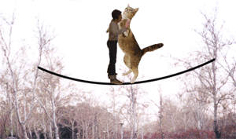

ماما الناهاي جنبش فمينيست: مصاحبه با تيتا شخصيت اصلي رمان مثل آب براي شكلات
فروم فمینیستی
من. تيتا باز هم كه داري گريه مي كني. من كه بوي پياز نمي شنوم. اين دفعه چرا؟
ت . از فكر سرنوشتي كه دارم! اول لورا (اسكوئيول) و رمانش باعث دردسر شد. همين قدر كه جزو هوادارن "زنان را اضافه كنيد و هم بزنيد" نباشد براي من كافي بود اما روشنفكر از آب درآمدنش بيچاره ام كرد. به نظر لورا من تلاقي بين فرد و فرهنگي هستم كه فرد در آن تعريف مي شود. بنابراين خود او مي پذيرد كه در عين داستاني بودن، واقعي ام. اما طوري از قول من حرف مي زند كه مي شوم سوم شخص، انگار زبان ندارم؛ مي شوم يك شخصيت داستاني صرف، انگار وجود ندارم. او مي گويد كه من جز از طريق حس ذائقه قادر به ايجاد ارتباط با ديگران نيستم، و جز از طريق آشپزي نمي توانم مكنونات قلبي ام را بيان كنم. فكر مي كند اين همه آن چيزي است كه من هستم. مي داند كه هر حركتي در چارچوب مقررات ماما النا چقدر سخت است. مي داند كه در آن دستور غذاها چقدر خلاقيت و قدرت زنانه هست يا به قول خودش "هرچه در قلمرو آشپزخانه قرار دارد، از طعم و بو و مخلوط كردن و ساختن و ريختن و پختن و فرآورده اين عمليات حيطه اي ماوراي كنترل ماما النا است"، اما نمي تواند به همان روال تركيب هاي آزادتري از ما چهار زن خانواده بسازد، فضاي بيشتر براي تنفس را فقط به گرتروديس مي دهد و نه به بقيه ما. اما از دست لورا رها نشده گير نانسي (برنز-مك كوي) افتادم و اصرارش درباره اين كه ثابت كند در پژوهش هم "صداهاي متعدد مي توانند با هم تلفيق و آميخته شوند و بناي دانشي به نسبت بي ثبات، تحير انگيز و كاهش ناپذير را بگذارند."
من. بعد از رمان و سينما حالا نوبت پژوهش شد؟ اگر اين نانسي درباره عشق، رمنس، ميل، طغيان، سنت و... پژوهش مي كند لطفا اي-ميلش را به من بده.
ت . هم در مورد اين چيزها هست و هم نيست: تحقيق فمينيستي است. درباره هنر زنانه ي در آميختن است.
من. حرف هاي اروتيك نزن كه به قدر كافي مشكل داريم!
ت . منظورم در آميختن مواد غذايي است.
من. تيتا بدجنسي نكن! تا جايي كه من مي دانم...
ت . تو داري با من مصاحبه مي كني، پس صبر كن برات توضيح بدهم. بحث نانسي اين است كه من مواد غذايي را با هم مخلوط مي كنم و از اين چيزهاي عجيب و به ظاهر ناهمگون مثل گل رز، شاه بلوط، رازيانه، عسل، سير و بلدرچين غذايي درست مي كنم چنان لذيذ و پر لذت كه پدرو نتواند خودش را كنترل كند و از چارچوب مقرراتي كه ماما النا وضع كرده بيرون بزند و بگويد "اين كه مائده بهشتي است؟" غذايي كه پيام هاي عاشقانه و غير عاشقانه را منتقل مي كند، غذاهايي درمانگر هر دردي.
اين هنر زنانه نيست؟ ارزش يادگيري ندارد؟
من. چرا خوب، اما...
ت . گير تو هم مثل نانسي همين اماست. گرچه نانسي مشكل تو را با غذا ندارد و معتقد است كه هريك از ما تاريخي شخصي يا ملي داريم كه در درون مان حبس شده و كليد اين تاريخچه غذاست. با اين حساب نمي دانم تو چطور سراغ من آمدي؟
من. با حس بويايي ام.
ت. بايد حواس ديگرت را هم تقويت كني. به هر حال حرف نانسي اين است كه اولا داستان من با اين همه غريبي همه را متقاعد مي كند و اعتبار خودش را دارد. مثلا صحنه آخري سوختن و برافروختن من و پدرو كه آتش به همه مزرعه مي زند و سه هفته ادامه دارد. به نظر او داستان من از حيث متقاعد كنندگي چيزي از هيچ پژوهش معتبري كم ندارد. در ثاني در پژوهش هم بايد موادي را با هم قاطي كرد و به اصطلاح غذايي توليد كرد. حالا حرف سر اين است كه چرا من مي توانم با مواد غذايي چنين كاري را بكنم و او نمي تواند با مواد پژوهش اين كار را بكند؟ خلاصه، چرا پژوهش امكان چند صدايي بودن را مي گيرد و، هر چند كه فمينيست ها اصراري به جدا كردن داستان و غير داستان از هم ندارند و اين را هم يك جور دو قطب ساختن از مقوله اي واحد، جداسازي مردسالارانه، مي شمرند، باز در پژوهش هاي بعضي از فمينيست هاي تيپ ماما النا در حالي كه فمينيسم يك چارچوب رهايي بخش است، چيزهايي در اين چارچوب مي گنجانند، كه رهايي بخش نيست و مثل غذاي مانده مي ماسد؟ چرا بعضي از فمينيست ها ما را وا مي دارند همان چيزي شويم كه ازش با تمام قوا فرار مي كنيم؟ (اين جمله مال فرخ قره داغي است).
من. براي اين گريه مي كني؟ يعني ديگر اشكت با پياز ربط ندارد؟
او. همه چيز با پياز ربط دارد. رمان جواد موسوي، بوي شكلاتي تو، را نخوانده اي؟
من. تو هم خوانده اي؟
ت. آره، اول به خاطر اسمش و بعد يك جورهايي ازش خوشم آمد. به هر حال گريه من هم از نگراني براي نانسي است و هم اين كه از بس عادت كرده ام پيام هايم را به پدرو از ترس ماما النا به صورت غذايي بفرستم، حالا نمي دانم چطور به نانسي بفهمانم كه در رمان هر چارچوبي حداكثرش عين ماما

.....در این چادرها برای بچه ها انواع و اقسام کارتون پخش می شد و برای آقایون انواع و اقسام فوتبال لیگ های اونوری و اینوری و مقدار متنابعی تخمه برای اینکه هی گیر ندن که دیر شد پاشیم بریم .کلی متکا در اندازه های مختلف هم در دسترسشون قرار گرفته بود تا برای خالی کردن انواع و اقسام عصبانیت ها، هیجانات، دلخوری ها و اعصاب ندارم های روزانه مشکلی نداشته باشن.
البته همه مردها مجبور نبودن که برن در این چادرها و در های جشن بزرگ زنان به روی همه باز بود. مهد مردها هم برای اونهایی بود که نه غیرتشون اجازه می داد، ناموسشون تنهایی بیاد پارک اون هم با یه مشت زن و نه اینکه خودشون حوصله جشن و این حرف ها داشتن.
ما استاندارد بدن را می شناسيم
مطالب این کارناوال هر ....هفته به روز می شود.
---->

چرا باید به جنبش رفراندم پیوست؟

چرا نباید در انتخابات شرکت کرد؟
بهترین روش استفاده از این سایت گم شدن در آن است.

ایفنا:
انگاری خیلی ها هستن که چشم دیدن کارناوال راه انداختن و جشن و شادی ما را ندارن. درست وسط هیاهو و دالام ودولومب جشن صدای یه انفجار مهیب همه را میخکوب کرد.دود سیاهی که از کنار حوض وسط پارک بلند شد داشت همه را زهره ترک می کرد که یهو دیدیم سر و کله همه مون پر از سوسک های مرده است.بمب منفجر شده یک بمب سوسکی بود.